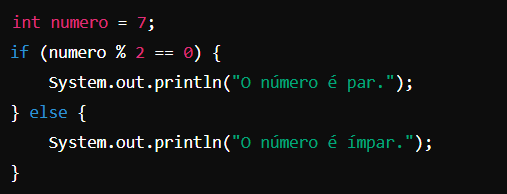
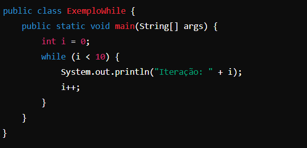

Estrutura Condicional
Estruturas condicionais são um recurso da programação utilizados para tomar uma decisão dentro de um código.
Ela permite ao algoritmo executar uma ação especifíca dependendo se o valor for verdadeiro ou falso.
Para exemplificar, temos o If/Else.
-
If
O If é o primeiro a ser executado. Ele é responsável por testar uma condição, que caso seja verdadeira resultará na execução do bloco de código.
-
Else
O Else é o reserva do If. Ele será executado apenas se o valor que foi testado no bloco de código do If resultar em falso.
-
Else If
Também existe o Else If, que é utilizado quando precisamos testar mais de uma condição em sequência. Com ele é possível criar vários caminhos de decisão.
Na prática:

Estrutura de Repetição
As estruturas de repetição são uma parte muito importante do código. Elas evitam a repetição manual, fazendo
um bloco de código se repetir até que um critério seja atendido. Isso facilita muito na automatização de
tarefas e otimização do programa.
Na tabela a seguir estão alguns dos laços de repetição mais usados.
| Laço | Quando usar | Características |
|---|---|---|
| While | Quando não sabemos quantas vezes será necessário repetir. | Executa enquanto a condição for verdadeira. Se começar falsa, não roda nenhuma vez. |
| Do While | Quando precisamos garantir que o bloco rode pelo menos uma vez. | A condição é verificada depois da execução. |
| For | Quando o número de repetições é conhecido. | Possui inicialização, condição e incremento em uma única linha. |
| Importante: todos os laços de repetição devem ter uma condição que possa ser encerrada, para evitar loops infinitos. | ||
Para uma melhor fixação, assista à videoaula:

Deseja se aprofundar mais no assunto?
Faça seu cadastro nas aulas de Lógica de Programação.
Resumo:
Para concluir, assista esse vídeo para reforçar os seus conhecimentos em lógica de programação.